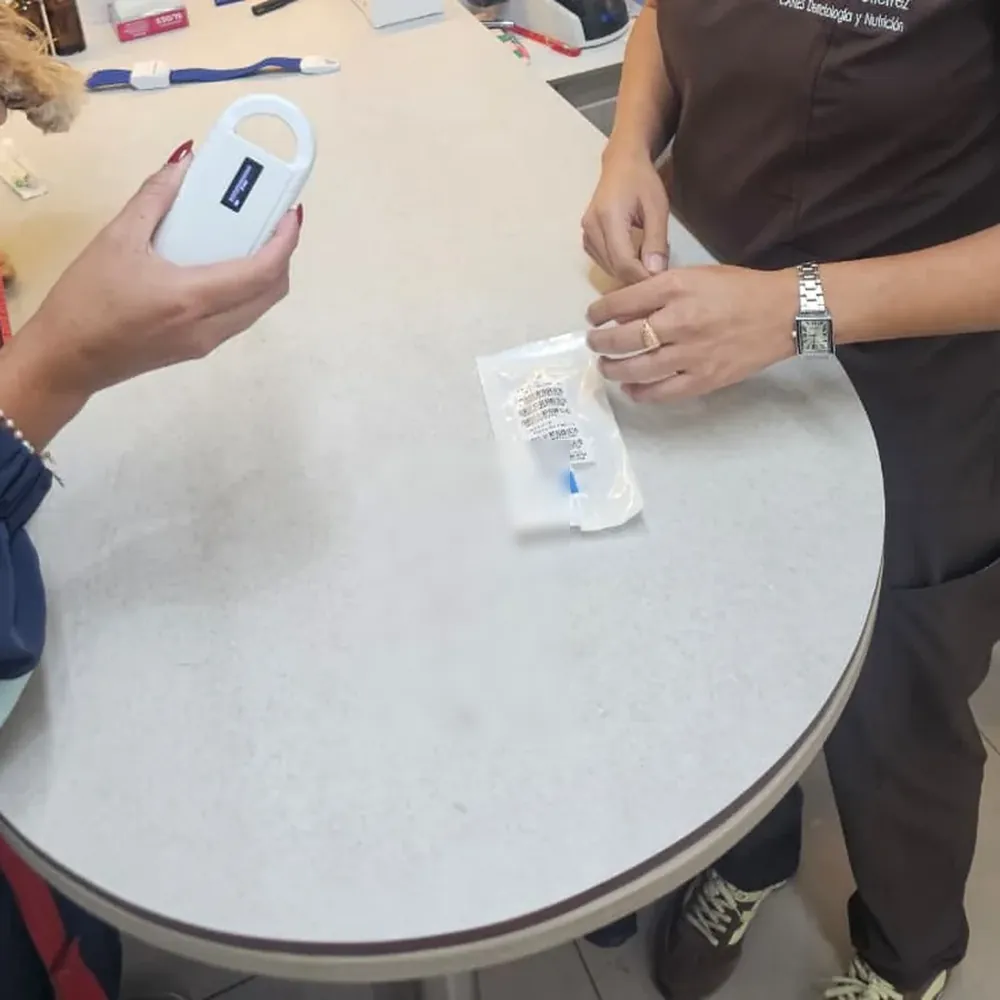

Servicios médicos · Identificación
Implantación de microchip para mascotas
Es el primer eslabón de todo el viaje: sin el número correcto y a tiempo, el resto de los papeles no vale.
Nosotros implantamos y registramos el microchip de tu mascota con el estándar que exige cualquier viaje internacional. Lo dejamos listo y verificado en el acto.
Consultar por WhatsApp
Qué es
Un microchip es un pequeño transpondedor del tamaño de un grano de arroz que se coloca bajo la piel de tu mascota, entre los omóplatos. No tiene batería ni emite nada por sí solo: cuando un lector lo acerca, devuelve un código único de 15 dígitos. Es una identificación permanente, para toda la vida, y es el estándar internacional para que cualquier país reconozca a tu animal.
Qué hacemos
Implantamos el microchip con material estéril, lo registramos y —esto es clave— lo verificamos en el acto con el lector para confirmar que quedó bien colocado y que se lee sin problemas. Un chip que no se lee es como no tenerlo.
Por qué es el primer paso de todo viaje
El microchip es el ancla de todo el expediente: cada documento posterior —la vacuna antirrábica, el análisis de sangre, el certificado— se emite a nombre de ese número. Por eso la Unión Europea exige que el microchip se coloque antes o el mismo día de la vacuna antirrábica: si la vacuna es anterior al chip, sencillamente no cuenta, y hay que reiniciar el proceso.2 Además debe cumplir el estándar ISO 11784/11785; si no lo cumple, el dueño tendría que llevar su propio lector a la frontera.
El microchip por dentro (qué estándar y qué significa)
- ISO 11784 — la norma internacional que define la estructura del código: 15 dígitos, donde los primeros identifican el país o el fabricante.1
- ISO 11785 — define cómo el lector activa y lee el transpondedor, para que un mismo escáner funcione en cualquier aeropuerto o frontera.1
- FDX-B (full-duplex tipo B, 134,2 kHz) — la tecnología que leen los escáneres estándar del mundo; es la que ves en la pantalla del lector.
- Permanente e indoloro — se coloca en segundos con una aguja fina, no requiere anestesia y dura toda la vida del animal.
Un microchip que no cumpla el estándar internacional, o que no se pueda leer, puede frenar el viaje en el punto de control. Por eso verificamos siempre la lectura antes de darte el alta.
Cuándo hacerlo
Antes que cualquier otro paso. Es literalmente lo primero: sobre ese número se construye todo lo demás. Si tu mascota ya tiene chip, lo verificamos; si no, lo colocamos y arrancamos el proceso. Escríbenos y lo coordinamos.
¿Tu mascota necesita microchip o quieres verificar el que ya tiene? Escríbenos y lo dejamos listo y registrado el mismo día.
Consultar por WhatsAppPreguntas frecuentes
¿Qué microchip necesita mi mascota para viajar?
Uno que cumpla el estándar internacional ISO 11784/11785, con un código único de 15 dígitos. Si el microchip no cumple ese estándar, el dueño debe llevar su propio lector compatible al punto de control fronterizo. Lo desarrollamos con evidencia, en tres idiomas: nuestra serie técnica sobre el microchip de identificación y la guía qué es el microchip y cómo se tramita.
¿El microchip va antes o después de la vacuna antirrábica?
Antes, o el mismo día. La Unión Europea y otros destinos exigen que la vacunación antirrábica no sea anterior a la colocación del microchip; si lo es, la vacuna no se considera válida para el viaje y hay que repetir el proceso.
De nuestra autoría (no solo seguimos la evidencia: la producimos)
Sobre esto, nuestros fundadores han publicado en acceso abierto (serie técnica con DOI): Microchip de identificación animal: fundamento tecno…. Firmado por la Dra. Jessica Camacho (CMVP 12434).
Referencias
- International Organization for Standardization. (1996). ISO 11784:1996 — Radio frequency identification of animals: Code structure; ISO 11785:1996 — Radio frequency identification of animals: Technical concept. ISO.
- European Parliament & Council of the European Union. (2013). Regulation (EU) No 576/2013 on the non-commercial movement of pet animals. Official Journal of the European Union, L 178, 1–26.
- Camacho García, J. Y. (2026). Microchip de identificación animal: fundamento tecnológico, marco regulatorio internacional y trazabilidad sanitaria. Serie Técnica Zoovet Travel. https://zoovettravel.com/articles/zoovet_art6_microchip-ES.html